Gas peaker plant (gas) — DE-LU bidding zone, 2020–2026 |
Model: aFRR_Price = β₀ + β₁·CSS (fitted per year × regime)
Each hour can be classified into three market regimes based on total gas generation in the DE-LU bidding zone, using fixed MW thresholds derived from K-Means clustering of the 2020–2026 historical generation profile:
| Regime | gas Generation | Reserve Supply |
|---|---|---|
| Low | < 5,858 MW | Scarce — few plants online, mostly efficient CCGT generators |
| Medium | 5,858 – 10,546 MW | Balanced — moderate number of providers |
| High | ≥ 10,546 MW | Abundant — many plants online, including less efficient gas powered reciprocating engines |
Thresholds are midpoints between adjacent K-Means centroids (low ≈ 3,776 MW; medium ≈ 7,941 MW; high ≈ 13,150 MW).
The CSS measures the profitability of selling electricity in the day-ahead (DA) market rather than holding back capacity for the balancing reserve:
CSS = DA_Price − Gas_Price / η − ETS_Price × intensity / η
A high CSS means spot-market generation is highly profitable, creating a strong opportunity cost for committing capacity to the reserve.
Automated Frequency Restoration Reserve (aFRR) is a balancing capacity product procured day-ahead by the TSO (TenneT in DE-LU). Generators submit hourly bids (€/MW); the accepted bids are settled pay-as-bid. The reported hourly aFRR-up price is the capacity-weighted average of accepted upward bids in that hour.
An R² of 0.287 means the regressors explain 28.7% of the variance in Y; the remaining 71.3% is unexplained.
For each year from 2020 to 2025, and for each market regime, we fit a separate Ordinary Least Squares (OLS) model of the form:
aFRR_Price = β₀ + β₁ · CSS
The per-year approach is motivated by the structural breaks visible in German energy markets: COVID-19 demand suppression (2020–2021), the energy crisis triggered by Russia's invasion of Ukraine (2022–2023), and the subsequent normalisation (2024–2025). Fitting separate annual models allows β₁ to vary across these regimes without imposing a single structural relationship on fundamentally different market states.
The regime label already captures gas generation levels, so CSS is chosen as sole predictor. Including DA price separately would double-count the information already embedded in CSS.
| Year | High | Medium | Low |
|---|---|---|---|
| 2020 | 0.192 | 0.074 | 0.001 |
| 2021 | 0.094 | 0.014 | 0.011 |
| 2022 | 0.039 | 0.051 | 0.000 |
| 2023 | 0.101 | 0.072 | 0.019 |
| 2024 | 0.287 | 0.166 | 0.004 |
| 2025 | 0.230 | 0.130 | 0.004 |
| 2026 | 0.331 | 0.045 | 0.002 |
Each chart below shows one market regime across all years, with one subplot per year and a linear trend line. This allows direct comparison of how the CSS–aFRR relationship evolves within a single regime from year to year.
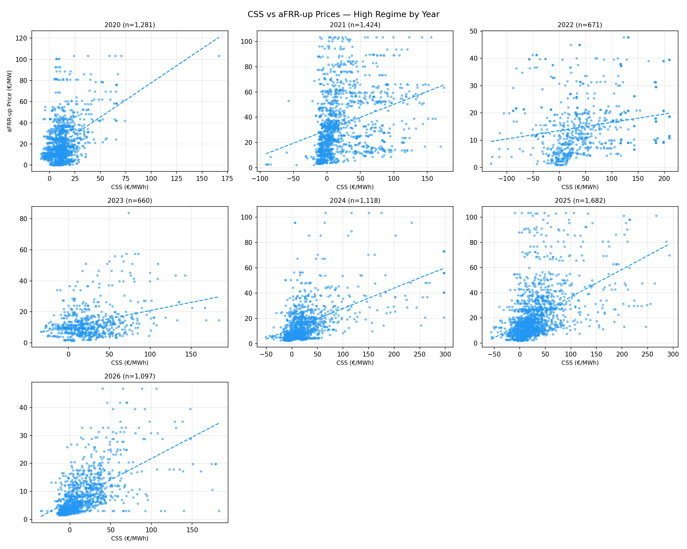
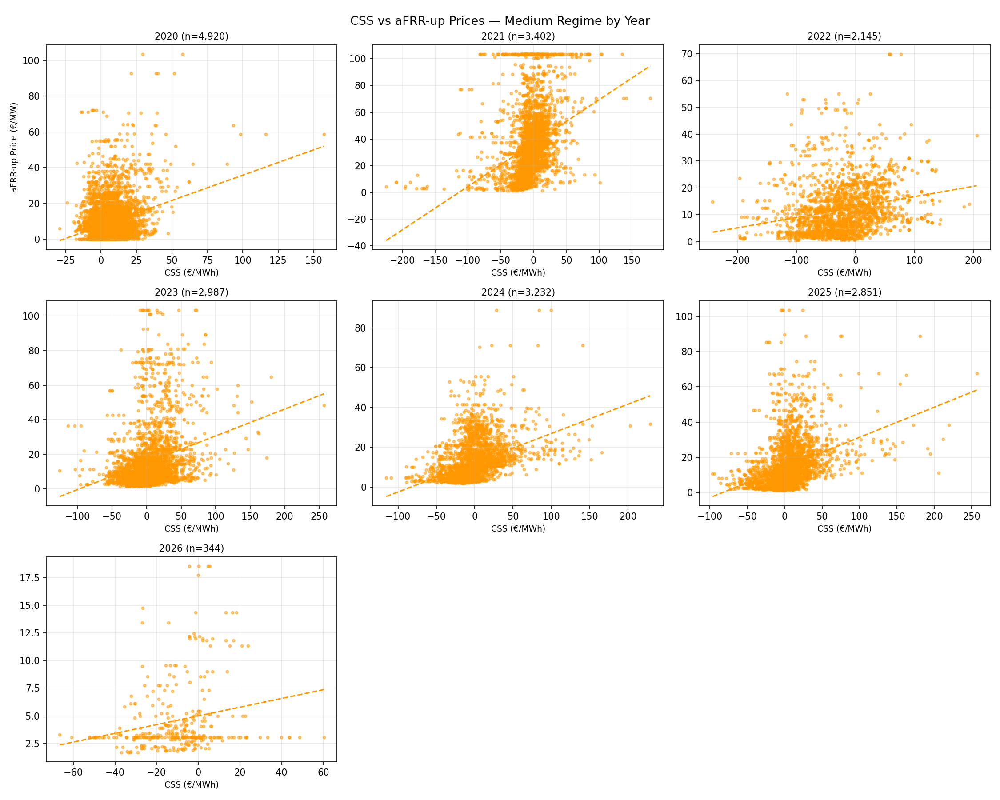
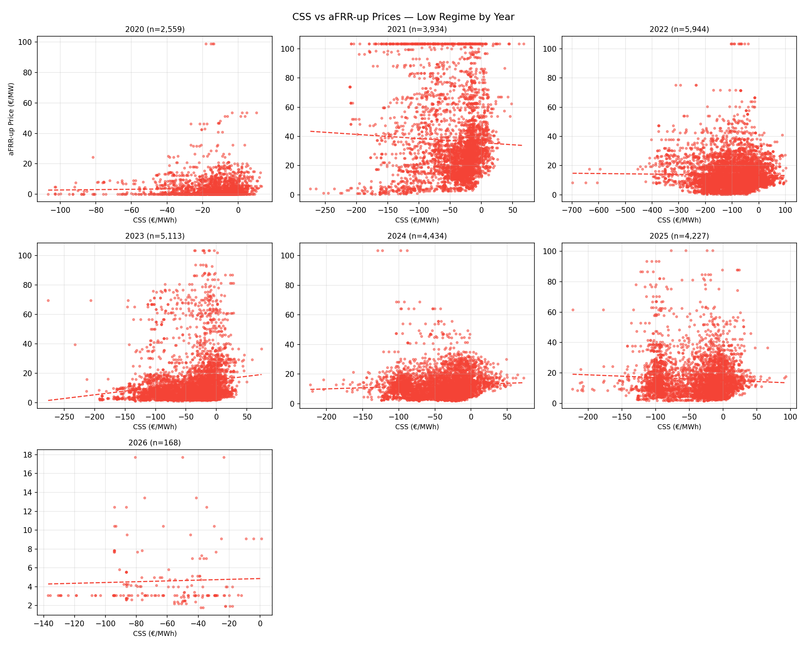
The R² is strikingly weak throughout, rarely exceeding 0.019. When only efficient generators are providing balancing services their bids are independent of CSS.
Low regime aFRR is concomitant with negative CSS. Understandable; only efficient Generators can run during low CSS periods(their η > 0.50). During medium and high regimes (where, η ~ 0.50), the modelled CSS begins reflecting their bidding.
High regime consistently produces the strongest R² (excluding 2021 and 2022). This suggests the model's predictors have the most explanatory power during high regime — likely because high-regime periods exhibit competition dynamics.
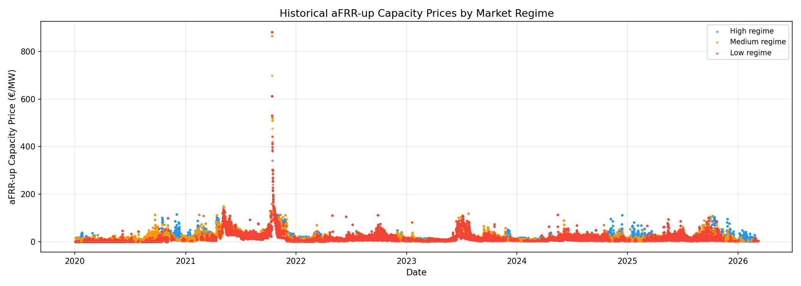
For January and February 2026, we use the known gas generation (from ENTSO-E transparency data) to assign each PTU to a market regime, then apply the 2025 annual model coefficients to forecast the aFRR-up capacity price as a function of the prevailing gas price and DA price. Actual aFRR prices (where available) are plotted alongside the forecasts for comparison.
Each chart covers one calendar week.
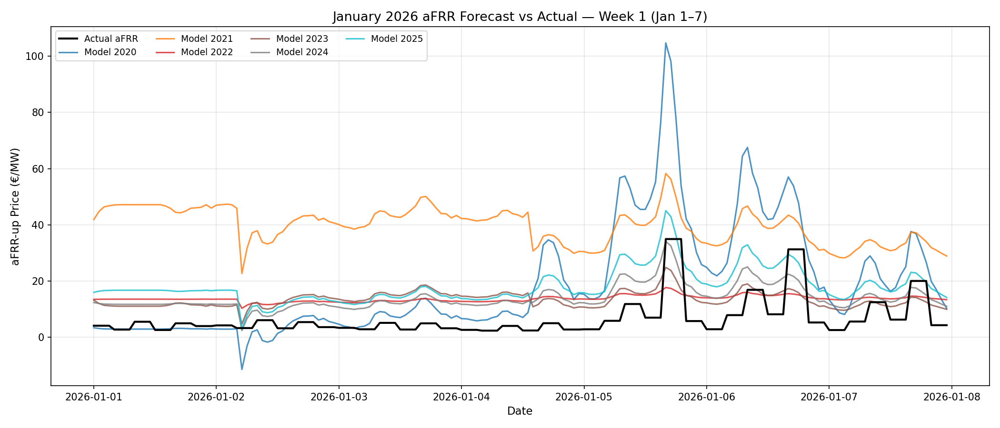
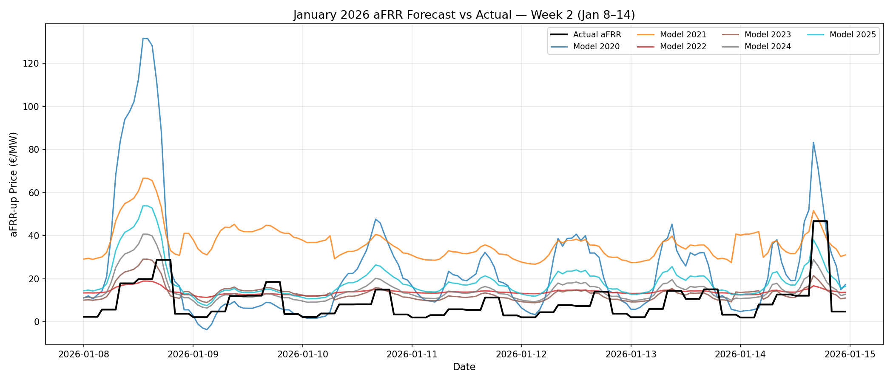
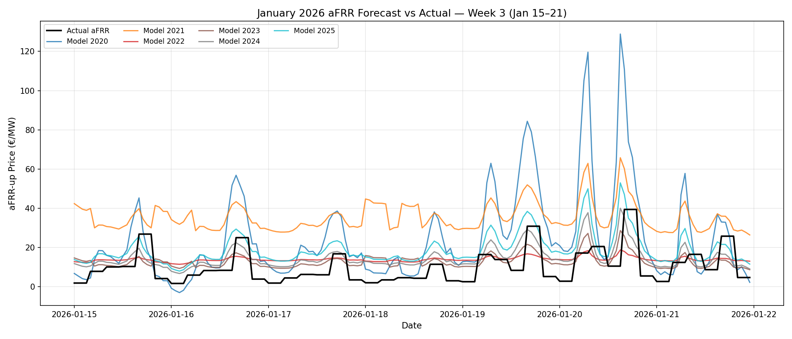
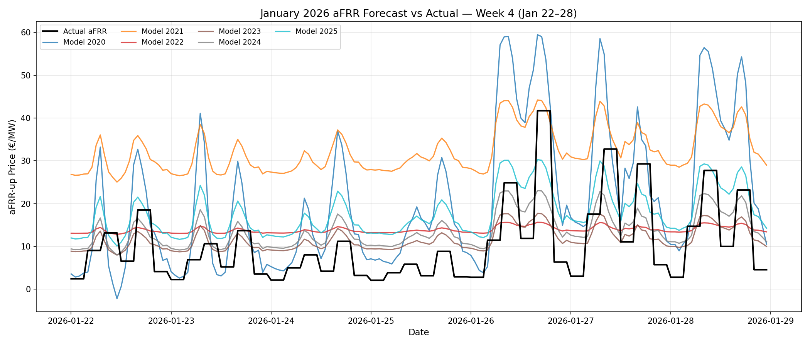
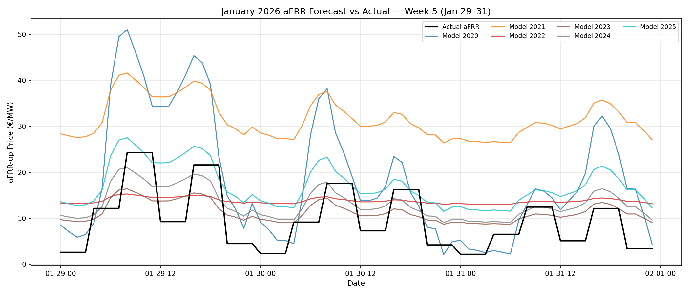
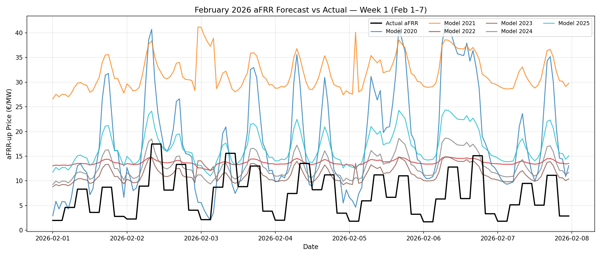
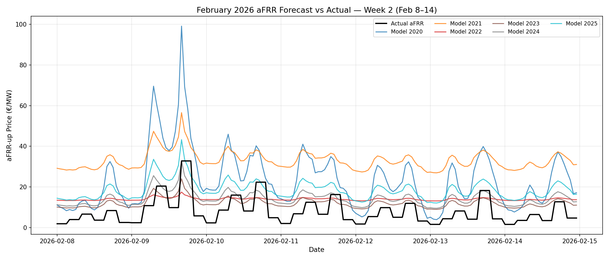
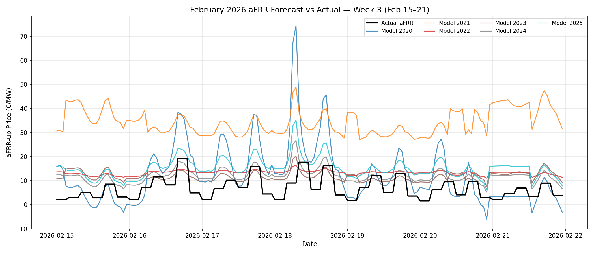
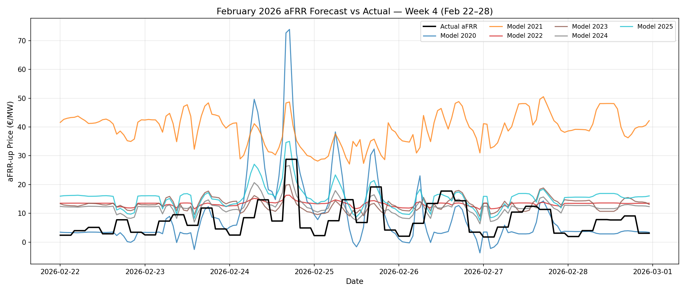
Across both January and February 2026, the model-derived forecasts tend to sit above the observed aFRR-up prices. This is an expected structural bias: the models are calibrated on historical data when Battery Energy Storage Systems (BESS) had a smaller footprint in the aFRR market. Since 2024, BESS capacity participating in aFRR has grown substantially. BESS operators face near-zero marginal costs and bid aggressively at low prices, compressing the market clearing price independently of CSS. The models cannot capture this effect because BESS participation data was not included in the training features.
Despite the systematic upward bias, the model correctly reproduces the intra-week shape of aFRR prices — the rise and fall of prices in response to changing gas forward curves and DA price levels. The level shift introduced by BESS could in principle be corrected with a BESS-participation adjustment term.
This agreement can be explained as follows: The PTUs in the months of Jan and Feb are gas dominant i.e. high regimes, which is expected when renewables are low in winter months. We observed high R² for this regime.
aFRR capacity prices for March 2026 are not yet available from Regelleistung.net at the time of writing. Forecast charts for March should be interesting, as gas prices will be high but the regimes might be predominantly low to mid.